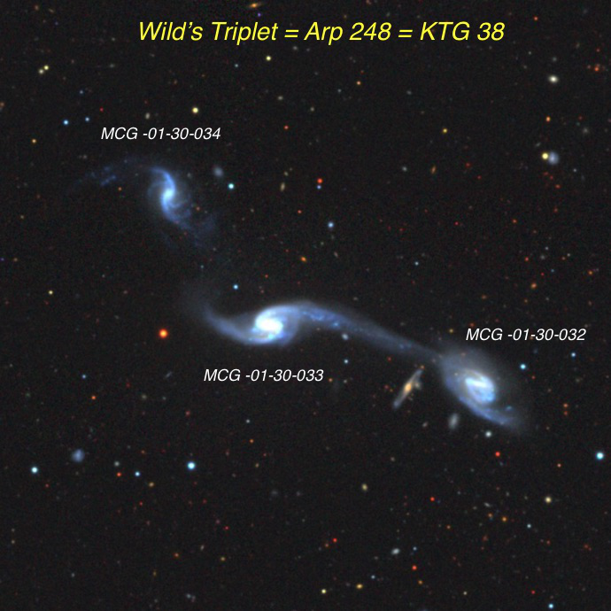
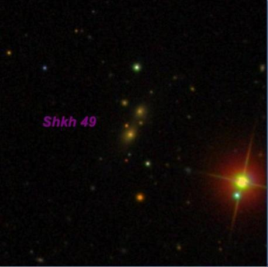

The remarkable NGC 3158 cluster
NGC 3158
Brightest member of a small cluster of early-type galaxies with more than 30 members.
Leo Minor
RA 10h 13.8m
DEC +38° 46
Magnitude 11.9V
This remarkable cluster (WBL 258) consists of over a dozen galaxies surrounding NGC 3158, all packed into a 15' field. The largest and brightest member, NGC 3158, was discovered by William Herschel on 17 March 1787 and should be visible in a 6-inch scope. The SDSS image reveals a giant elliptical snacking on numerous small neighbors captured in its halo. With my 18-inch scope, I logged it as "fairly bright, moderately large, irregularly round, well concentrated with a very bright core and relatively large, fainter halo, ~0.8'x0.7'." NGC 3163, the second brightest member (also visible in a 6") was also found by Herschel and logged in my 18-inch as "fairly faint, small, round, 25" diameter, very small bright core."
The surrounding field is swarming with small, faint galaxies including NGC's 3150, 3151, 3152, 3159, 3160 and 3161. All of these are visible in a 10 to 14-inch scope using moderate to high power (several were discovered by Guillaume Bigourdan in 1886 with an 11" refractor and others with Lord Rosse's 72" Leviathan). Finally, there are several more challenging MCG and LEDA galaxies in the 16th magnitude range which were all noted in my 18-inch.
When you check out the NGC 3158 cluster, see if you can detect the Shakhbazian 49 group of compact galaxies -- just 20' NE of the NGC 3158 cluster. Megastar plots a single anonymous galaxy -- MAC 1015+3855 = LEDA 3753093. I'm guessing this tiny galaxy is rough V = 16.5 and a slightly fainter companion is 20" NNW. Both were barely visible in my 18-inch scope. I'm curious to hear who has snagged these?
A full resolution image is available here


“GIVE IT A GO AND LET US KNOW”
GOOD LUCK AND GREAT VIEWING!
Steve's follow-up — February 14th, 2016, 11:22 PM
Here are four non-NGC members of the group viewed with my 18" about 6 years ago.
PGC 2131950
10 13 33.8 +38 37 05
V = 15.7; Size 0.5'x0.25'; PA = 0d
Extremely faint and small, round, 5" diameter. A very faint star is at the NE edge. With averted vision the halo occasionally increases to 15" diameter. Forms a close pair with brighter NGC 3151 0.9' W.
PGC 2135428
10 13 39.5 +38 44 43
Size 0.4'x0.25'; PA = 28d
Extremely faint and small, round, 5" diameter. Located just 2.4' SW of NGC 3158 and 30" N of a mag 14 star. A fainter companion, PGC 2135625, is 44" NE.
PGC 2135625
10 13 42.5 +38 45 09
V = 15.7; Size 0.3'x0.2'; PA = 105d
Situated just 1.7' SW of NGC 3158 and 1' NE of a mag 13.5 star. PGC 2135428 is just 44" SW.
MCG +07-21-019 = PGC 29818
10 13 47.9 +38 40 32
V = 15.0; Size 0.5'x0.4'; Surf Br = 12.2; PA = 85d
Extremely faint, very small, elongated 3:2 E-W, ~20"x14". Located 1.6' NW of NGC 3159 and faintest of 4 with NGC 3161 and NGC 3163 (the three NGC galaxies form a nice 2.8' string). This quartet is just 6' S of NGC 3158.